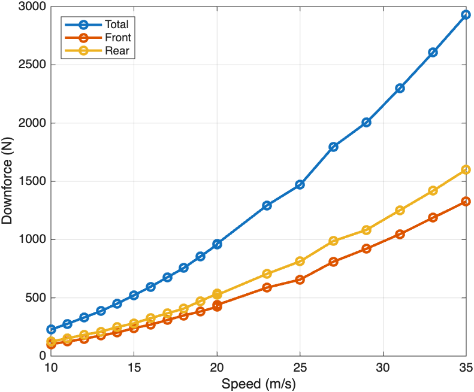
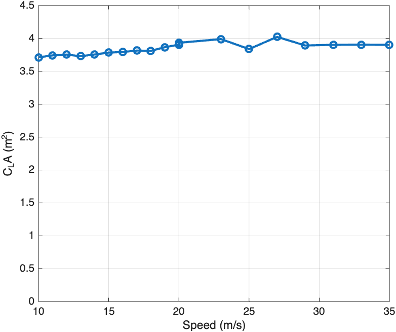
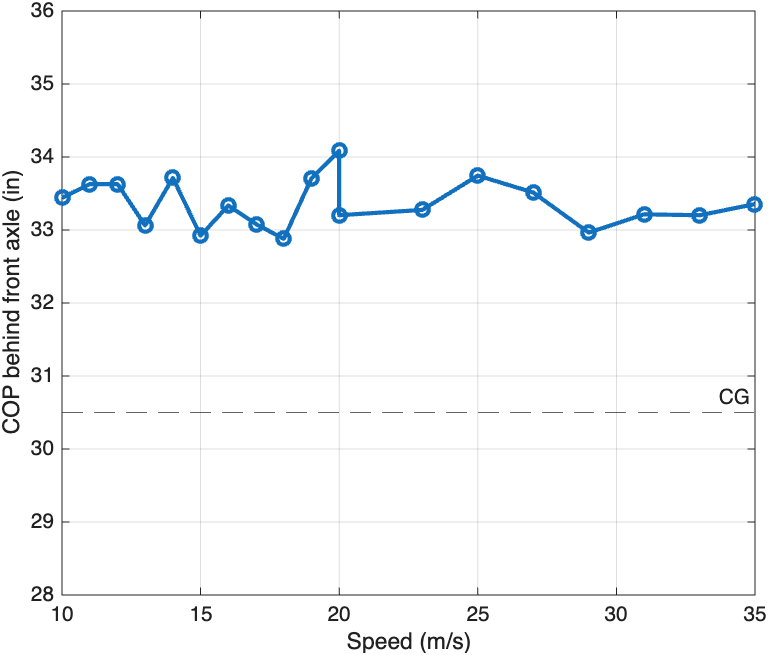

1Data
This is CFD data from a speed sweep of the car from 10 to 35 m/s, with the car at 0° yaw, 0° roll and 0° pitch. The first ten columns come from the CFD. The last six are calculated from them for the suspension work, using the equations in Section 2.
| Speed (m/s) | Speed (km/h) | Downforce (N) | Drag (N) | L/D | Front downforce (N) | Rear downforce (N) | Front balance (%) | CLA (m²) | CDA (m²) | Front CLA (m²) | Rear CLA (m²) | Front CL (lbf/mph²) | Rear CL (lbf/mph²) | Front DF, sprung (N) | Front DF, unsprung (N) |
|---|---|---|---|---|---|---|---|---|---|---|---|---|---|---|---|
| 0 | 0.0 | 0.00 | 0.00 | 0.000 | 0.00 | 0.00 | 0.00 | 0.0000 | 0.0000 | 0.0000 | 0.0000 | 0.00000 | 0.00000 | 0.00 | 0.00 |
| 10 | 36.0 | 227.38 | 87.43 | 2.601 | 102.72 | 124.66 | 45.18 | 3.7123 | 1.4275 | 1.6772 | 2.0351 | 0.04616 | 0.05601 | 76.01 | 26.71 |
| 11 | 39.6 | 277.38 | 109.20 | 2.540 | 124.45 | 152.92 | 44.87 | 3.7426 | 1.4734 | 1.6793 | 2.0633 | 0.04621 | 0.05678 | 92.09 | 32.36 |
| 12 | 43.2 | 331.18 | 130.38 | 2.540 | 148.59 | 182.59 | 44.87 | 3.7549 | 1.4782 | 1.6848 | 2.0701 | 0.04637 | 0.05697 | 109.96 | 38.63 |
| 13 | 46.8 | 386.08 | 152.51 | 2.531 | 176.81 | 209.27 | 45.80 | 3.7298 | 1.4734 | 1.7082 | 2.0216 | 0.04701 | 0.05563 | 130.84 | 45.97 |
| 14 | 50.4 | 450.97 | 181.37 | 2.486 | 201.72 | 249.26 | 44.73 | 3.7565 | 1.5108 | 1.6803 | 2.0762 | 0.04624 | 0.05714 | 149.27 | 52.45 |
| 15 | 54.0 | 521.71 | 203.84 | 2.559 | 240.16 | 281.55 | 46.03 | 3.7856 | 1.4791 | 1.7425 | 2.0431 | 0.04795 | 0.05623 | 177.72 | 62.44 |
| 16 | 57.6 | 594.91 | 235.67 | 2.524 | 269.78 | 325.13 | 45.35 | 3.7941 | 1.5030 | 1.7206 | 2.0735 | 0.04735 | 0.05706 | 199.64 | 70.14 |
| 17 | 61.2 | 675.56 | 264.17 | 2.557 | 309.17 | 366.38 | 45.77 | 3.8164 | 1.4924 | 1.7468 | 2.0696 | 0.04807 | 0.05696 | 228.79 | 80.38 |
| 18 | 64.8 | 756.41 | 292.93 | 2.582 | 348.70 | 407.71 | 46.10 | 3.8116 | 1.4761 | 1.7571 | 2.0545 | 0.04836 | 0.05654 | 258.04 | 90.66 |
| 19 | 68.4 | 855.14 | 337.50 | 2.534 | 382.61 | 472.53 | 44.74 | 3.8675 | 1.5264 | 1.7303 | 2.1372 | 0.04762 | 0.05882 | 283.13 | 99.48 |
| 20 | 72.0 | 956.77 | 379.60 | 2.520 | 422.13 | 534.64 | 44.12 | 3.9052 | 1.5494 | 1.7230 | 2.1822 | 0.04742 | 0.06005 | 312.38 | 109.75 |
| 20 | 72.0 | 963.91 | 363.56 | 2.651 | 439.28 | 524.63 | 45.57 | 3.9343 | 1.4839 | 1.7929 | 2.1414 | 0.04934 | 0.05893 | 325.07 | 114.21 |
| 23 | 82.8 | 1293.02 | 482.50 | 2.680 | 587.61 | 705.41 | 45.45 | 3.9906 | 1.4892 | 1.8137 | 2.1769 | 0.04991 | 0.05991 | 434.83 | 152.78 |
| 25 | 90.0 | 1469.48 | 577.99 | 2.542 | 656.58 | 812.90 | 44.68 | 3.8386 | 1.5099 | 1.7151 | 2.1235 | 0.04720 | 0.05844 | 485.87 | 170.71 |
| 27 | 97.2 | 1796.88 | 692.60 | 2.594 | 809.68 | 987.19 | 45.06 | 4.0242 | 1.5511 | 1.8133 | 2.2109 | 0.04990 | 0.06084 | 599.16 | 210.52 |
| 29 | 104.4 | 2005.41 | 774.84 | 2.588 | 921.76 | 1083.66 | 45.96 | 3.8932 | 1.5042 | 1.7893 | 2.1039 | 0.04924 | 0.05790 | 682.10 | 239.66 |
| 31 | 111.6 | 2297.81 | 900.43 | 2.552 | 1046.57 | 1251.24 | 45.55 | 3.9038 | 1.5297 | 1.7782 | 2.1256 | 0.04894 | 0.05850 | 774.46 | 272.11 |
| 33 | 118.8 | 2605.48 | 1017.17 | 2.562 | 1187.32 | 1418.16 | 45.57 | 3.9062 | 1.5250 | 1.7801 | 2.1261 | 0.04899 | 0.05851 | 878.62 | 308.70 |
| 35 | 126.0 | 2928.16 | 1163.08 | 2.518 | 1327.02 | 1601.15 | 45.32 | 3.9026 | 1.5501 | 1.7687 | 2.1339 | 0.04867 | 0.05873 | 981.99 | 345.03 |
2Calculated Values
The CFD gives the total downforce, DF, drag, D, and front and rear downforce, DFF and DFR, at each speed, V. The coefficients follow from these with the air density ρ = 1.225 kg/m³.
CLA = 2DFρV2 CDA = 2DρV2 L/D = DFD front balance = DFFDF
The front and rear CLA split the total by the front balance, bF.
CLAF = CLA × bF CLAR = CLA × (1 − bF)
The front and rear CL in lbf/mph² fold ½ρ into CLA, so the axle downforce in lbf is this value times the speed in mph squared. Converting ½ρ to these units:
½ρ = ½ × 1.225 × 0.447042 / 4.448 = 0.02752 lbf/(mph²·m²)
CL,F = 0.02752 CLAF CL,R = 0.02752 CLAR DFF = CL,FVmph2
Part of the front downforce goes straight into the unsprung mass and never passes through the springs. We take this as 26%, so the front downforce splits into a sprung and an unsprung part.
DFF,sprung = 0.74 DFF DFF,unsprung = 0.26 DFF
3Plots
Downforce grows with the square of speed, from 227 N at 10 m/s to 2928 N at 35 m/s. The rear carries slightly more than the front at every speed.

Show MATLAB code
V = [10 11 12 13 14 15 16 17 18 19 20 20 23 25 27 29 31 33 35];
DF = [227.38 277.38 331.18 386.08 450.97 521.71 594.91 675.56 756.41 855.14 956.77 963.91 1293.02 1469.48 1796.88 2005.41 2297.81 2605.48 2928.16];
DF_F = [102.72 124.45 148.59 176.81 201.72 240.16 269.78 309.17 348.70 382.61 422.13 439.28 587.61 656.58 809.68 921.76 1046.57 1187.32 1327.02];
DF_R = [124.66 152.92 182.59 209.27 249.26 281.55 325.13 366.38 407.71 472.53 534.64 524.63 705.41 812.90 987.19 1083.66 1251.24 1418.16 1601.15];
figure
plot(V, DF, '-o', V, DF_F, '-o', V, DF_R, '-o', 'LineWidth', 2)
grid on
xlabel('Speed (m/s)')
ylabel('Downforce (N)')
legend('Total', 'Front', 'Rear', 'Location', 'northwest')Because downforce grows with speed squared, CLA stays almost constant, between 3.71 and 4.02 m² across the sweep.

Show MATLAB code
V = [10 11 12 13 14 15 16 17 18 19 20 20 23 25 27 29 31 33 35];
CLA = [3.7123 3.7426 3.7549 3.7298 3.7565 3.7856 3.7941 3.8164 3.8116 3.8675 3.9052 3.9343 3.9906 3.8386 4.0242 3.8932 3.9038 3.9062 3.9026];
figure
plot(V, CLA, '-o', 'LineWidth', 2)
grid on
xlabel('Speed (m/s)')
ylabel('C_LA (m^2)')
ylim([0 4.5])4Center of Pressure
The center of pressure (COP) is the point along the car where the total downforce acts. Taking moments about the front axle, with the wheelbase ℓ = 61 in and the front balance bF, its distance behind the front axle is:
xCOP = DFRDFℓ = (1 − bF)ℓ
The CG sits at the middle of the wheelbase, 30.5 in behind the front axle, so the COP’s distance behind the CG is:
Δx = xCOP − ℓ2
Across the sweep the COP stays between 32.9 and 34.1 in behind the front axle, 2.4 to 3.6 in behind the CG. It moves by 1.2 in from 10 to 35 m/s, with no clear trend with speed, so the aero balance stays nearly the same as the car speeds up.

Show MATLAB code
V = [10 11 12 13 14 15 16 17 18 19 20 20 23 25 27 29 31 33 35]; % m/s
bF = [45.18 44.87 44.87 45.80 44.73 46.03 45.35 45.77 46.10 44.74 ...
44.12 45.57 45.45 44.68 45.06 45.96 45.55 45.57 45.32]/100; % front balance
L = 61; % wheelbase, in
xCOP = (1 - bF)*L; % COP distance behind the front axle, in
plot(V, xCOP, '-o', 'LineWidth', 2)
hold on
yline(L/2, '--', 'CG')
hold off
grid on
xlabel('Speed (m/s)')
ylabel('COP behind front axle (in)')
ylim([28 36])5Aero Map
Downforce and balance across front and rear ride height. To be added.